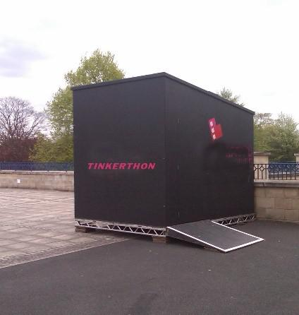

I would still like to hear from others about my submission for last week, posted at:
Last Project for LCL
{kind=link}
As a lad, I had a TinkerToy set, and Erector Set, and lots of bits and bobs for my Lionel Electric Train. I had a village, special cars, signals, lights, and the nerve and resourcefulness to arrange terrific train disasters. I learned a great deal by combining parts from my sets and my trains. Almost anything was within limits. The gaps were filled by my imagination, fed by my steady diet of the NEW MEDIUM, Television! I was a child of the Forties. Television was new, and adventure comics, and Popular Science Magazine was plentiful.
Now, as an adult with years and years of experience as a trainer and educator, I would enjoy putting together an Adult Tinker Toy set or Adult TinkerThon for the community. Using a semi-portable unit, such as a shipping container or a large tent structure, I can foresee something exciting and something that could be integrated into the schools in the area as well as local parks and recreational events.

Since I am close to a couple of major ports, shipping containers, both new and used are available. Custom colors and doors, and delivery are available. When it’s time to move, a call to the local towing company brings their flat bed hauler to hook up and haul the container.